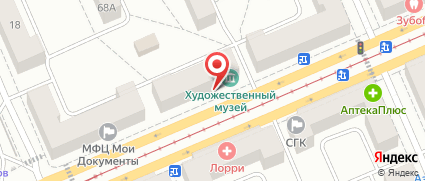

красноярский художественный музей
Красноя́рский госуда́рственный худо́жественный музе́й и́мени В. И. Су́рикова — одно из самых значительных собраний предметов изобразительного искусства за Уралом.
В фондах музея насчитывается более шестнадцати тысяч единиц хранения.
Часы работы: Понедельник: выходной ; Вторник: с 10:00 до 18:00 ; Среда, четверг: с 13:00 до 21:00 ; Пятница, суббота, воскресенье: с 10:00 до 18:00.
Информация о билетах: Взрослый билет — 250 рублей, льготный — 150 рублей.
Адрес: ул. Парижской Коммуны, 20, Красноярск, Красноярский край